(주)옥타코 멀티테넌트 SSO 인증 서비스
고객사 여러 곳이 함께 쓰는 SSO 인증 서비스입니다. 회사 계정 하나로 Notion과 Slack 같은 업무 앱에 모두 로그인합니다.
주요 성과
- 고객사 추가 실패자동 복구이전 사람이 찾아 삭제
- 캐시 만료 순간 DB 조회서버당 1회이전 요청 수만큼
- Redis 장애 중 세션 인증DB로 자동 우회이전 장애 주입 시 전체 인증 실패
- 배포 롤백Git Revert 한 번이전 VM 수동 배포
맡은 일
- 설계
- 서비스 구조
- 고객사 데이터 격리 방식
- 권한 관리 도메인과 접근 제어
- 의사결정 문서로 설계 근거 공유
- 개발
- 고객사 판별과 세션 관리 서버
- 업무 앱 로그아웃 전파
- 고객사 온보딩 서비스
- 사용자 도메인
- 권한 검사 어노테이션 라이브러리
- 인증 정책 캐시
- 감사 로그와 접근 로그 비동기 저장
- 인프라
- EKS 전환
- GitOps 배포 파이프라인
- EKS 운영과 트러블슈팅
- 서비스별 IAM Role 분리
- 기술
로그인 화면과 OIDC/SAML 처리는 팀원 담당
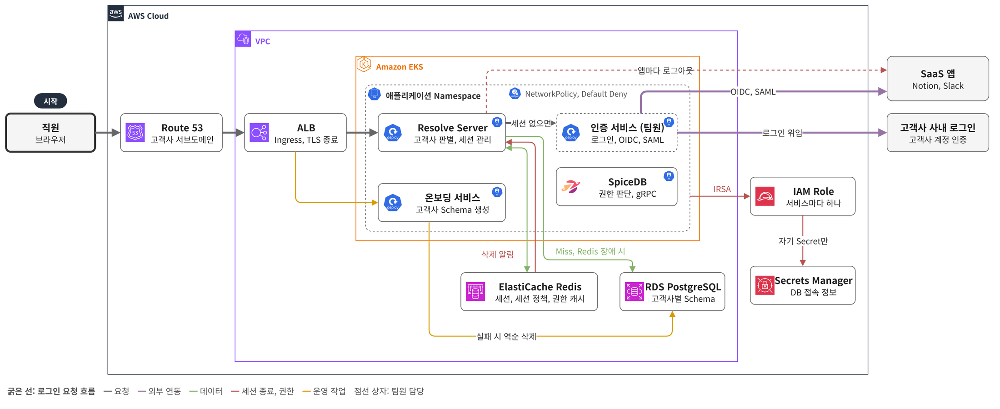
항목을 펼치면 찾은 문제와 해결 과정과 결과를 차례로 볼 수 있습니다. 그림은 누르면 크게 보입니다.
백엔드
고객사 판별과 업무 앱 로그아웃까지 맡는 세션 관리 서버로그아웃 누락 방지세션 삭제 하나로 모든 업무 앱에 전파
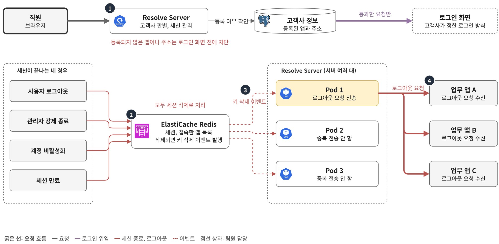
해결할 문제
- 고객사마다 로그인 방식과 인증 정책이 달라 요청마다 어느 고객사 요청인지 가려내야 함
- 세션은 로그아웃, 관리자 강제 종료, 계정 비활성화, 만료 네 경우로 끝남
- 경우마다 업무 앱 로그아웃 코드를 따로 넣으면 한 곳만 빠뜨려도 퇴사자가 업무 앱을 계속 쓸 수 있음
해결 과정
- 요청마다 고객사 판별
- 접속 주소의 서브도메인으로 고객사를 찾고 client_id와 redirect URI가 그 고객사에 등록된 앱과 주소인지 확인
- 맞지 않으면 로그인 화면을 보여 주기 전에 차단하고 통과한 요청만 고객사가 정한 로그인 방식으로 전달
- 세션 종료와 업무 앱 로그아웃
- 네 경우 모두 세션 삭제 한 곳으로 모아 처리하고 Redis Keyspace Notification으로 키 삭제 이벤트를 받아 그 세션으로 접속한 업무 앱마다 로그아웃 요청 전송
- 만료는 Redis가 세션을 지우는 방식이라 삭제 뒤에는 세션을 읽을 수 없어 접속한 앱과 고객사, 사용자 정보를 세션 ID별 Redis 키에 따로 저장
- 삭제 이벤트는 모든 서버에 전달돼 로그아웃이 중복으로 나갈 수 있어 Lua 스크립트로 로그아웃 정보 읽기와 삭제를 한 번에 실행하고 먼저 실행한 서버만 전송
결과
- 등록되지 않은 앱이나 주소로 온 요청은 로그인 화면에 닿기 전에 차단
- 어느 경우로 세션이 끝나도 연결된 업무 앱까지 로그아웃돼 계정을 비활성화한 퇴사자는 업무 앱을 계속 쓸 수 없음
- 세션을 끝내는 기능이 새로 생겨도 세션만 지우면 연결된 업무 앱까지 로그아웃
SpiceDB 권한 서버와 공통 어노테이션으로 구축한 서비스 접근 제어권한 검사 누락 차단모든 서비스가 같은 기준으로 fail-closed
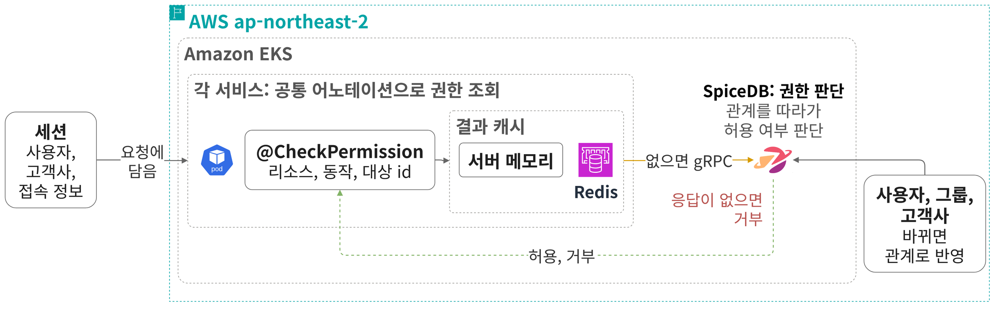
찾은 문제
- 같은 고객사 안에서도 사용자마다 리소스별로 허용되는 동작이 다름
- 권한이 사용자, 그룹, 리소스의 관계를 거쳐 이어짐
- 이 관계를 서비스마다 코드로 따라가 확인하면 기준이 서비스마다 달라지고 빠뜨리기 쉬움
- 백엔드 3명이 SSO와 함께 권한 관리 시스템까지 직접 만들기에는 인력이 부족
해결 과정
- Google Zanzibar 기반 SpiceDB를 도입해 권한 판단을 한 곳으로 모음
- 관계가 어떤 권한이 되는지 스키마로 정의 (예: 그룹 멤버는 그룹에 공유된 앱을 쓸 수 있음)
- 권한 검사 때 사용자에서 리소스까지 관계로 이어지는지 판단 (예: 사용자 → 그룹 → 공유된 앱)
- 사용자, 그룹, 고객사 정보가 바뀌면 SpiceDB에 관계로 반영
- 메서드 위에 리소스와 동작을 적으면(예: 앱 삭제) 실행 전에 SpiceDB에 권한을 묻고 없으면 차단하는 공통 어노테이션 라이브러리를 만들어 여러 서비스가 사용
- 조회 결과는 서버 메모리와 Redis 두 단계로 캐싱
- 권한이 바뀐 리소스는 SpiceDB에 다시 조회
- SpiceDB 장애로 권한을 알 수 없는 요청은 통과시키지 않고 차단
결과
- 권한 시스템을 직접 만들지 않고 규칙 변경도 스키마 수정으로 끝나 개발과 변경 부담 감소
- 모든 서비스가 같은 어노테이션과 판단 기준을 써서 권한 검사 누락과 서비스별 차이가 없어짐
- SpiceDB에 장애가 나도 권한을 알 수 없는 요청은 통과되지 않아 보안 유지
캐시 만료 순간 DB로 몰리는 요청을 하나로 묶은 Single FlightDB 조회 서버당 1회캐시 적중률 97% 이상
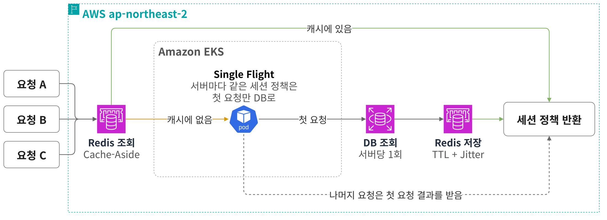
찾은 문제
- 인증 요청마다 사용자와 그룹별 세션 정책(세션 유지 시간과 동시 세션 수 등)을 DB에서 조회해 요청이 늘수록 부하 증가
1차 개선
- 세션 정책을 Redis에 Cache-Aside로 캐시해 k6 부하 시험에서 적중률 97% 이상을 내고 인증 경로의 DB 조회를 대부분 제거
부하 시험 중 추가로 찾은 문제와 해결
- 캐시가 만료되는 순간 들어온 요청이 모두 Cache Miss를 내고 DB로 몰리는 Cache Stampede 확인
- TTL에 무작위 Jitter를 더해 여러 세션 정책이 같은 시각에 만료되지 않게 분산
- 같은 세션 정책의 동시 Miss는 Redis 분산 락 대신 Single Flight로 묶어 서버마다 첫 요청만 DB 조회
- Redis 분산 락은 Miss마다 Redis 왕복이 늘고 Redis가 멈추면 인증까지 멈춰서 제외
- Single Flight는 서버 수만큼 DB 조회가 생기지만 정책 조회가 가볍고 서버 수도 적어 감당할 만하다고 판단
결과
- k6 부하 시험에서 캐시 적중률 97% 이상
- DB 조회가 요청 수만큼에서 서버당 1회로 줄어 캐시가 만료돼도 DB에 요청이 몰리지 않음
기술 블로그: Redis Cache Stampede 대응 ↗ · Redis Cache Penetration 대응 ↗
Redis 장애에도 세션 인증이 멈추지 않게 한 DB FallbackRedis 장애에도 인증 유지감지부터 복귀까지 자동
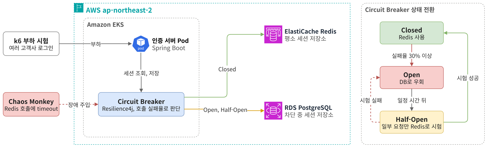
찾은 문제
- k6 부하 중 Chaos Monkey로 Redis timeout을 넣자 모든 고객사의 세션 인증 실패
- 세션을 Redis에만 두어 Redis가 모든 고객사 인증이 함께 거치는 단일 장애 지점
| 장애 유형 | Redis 복제 | Circuit Breaker + DB Fallback (선택) |
|---|---|---|
| Redis 노드 장애 | 복제본으로 넘어가 버팀 | DB로 우회 |
| 서버와 Redis 사이 지연 | 그대로 멈춤 | 느린 호출로 집계해 DB로 우회 |
| 서버와 Redis 사이 연결 끊김 | 그대로 멈춤 | 실패한 호출로 집계해 DB로 우회 |
해결 과정
- 네트워크 장애에도 대응하도록 장애 원인과 상관없이 호출 실패율로 판단하는 Circuit Breaker 선택
- Redis timeout은 500ms로 두고 최근 100건 중 300ms를 넘긴 느린 호출과 실패가 30% 이상이면 Redis 호출 차단
- 차단되면 세션을 PostgreSQL에서 읽고 쓰도록 전환하고 사용자는 다시 로그인
- 30초 뒤 Half-Open에서는 응답은 DB가 맡고 요청 10건만 Redis에도 보내 실패율이 30% 미만이면 복귀하고 그렇지 않으면 다시 차단
- 차단 중 DB에만 만든 세션은 Redis로 옮기지 않고 복귀 후 다시 로그인하게 해 두 저장소의 세션이 섞이지 않게 설계
- k6 부하 중 장애를 넣고 빼기를 반복하며 상태 전환 기록으로 DB 우회와 Redis 복귀 확인
결과
- Redis 장애 중에도 인증이 유지되고 사용자는 장애 시작과 복구 때 한 번씩만 재로그인
- Redis 복구를 시험하는 동안에도 응답은 DB가 맡아 세션 인증이 끊기지 않음
- 장애 감지부터 DB 우회와 Redis 복귀까지 사람 개입 없이 자동 처리
50만 건 부하 시험에서 찾은 검색 쿼리를 987ms에서 20ms로 줄인 인덱스 개선987ms → 20ms검색 쿼리 평균 실행 시간
찾은 문제
- 맡은 기능은 아니었지만 데이터가 적은 서비스 초기라 빨라 보이던 검색을 확인하려고 50만 건을 넣고 k6로 부하 시험
- 검색 API p99가 기준인 200ms를 넘어 1초 이상
원인 분석
- 분산 추적 도구가 없어 Actuator Timer로 메서드별 시간을, P6Spy로 쿼리별 시간을 재서 DB 쿼리를 원인으로 확인
- 실행 계획을 보니
LIKE '%검색어%'와 여러 컬럼의 OR 조건 때문에 인덱스를 쓰지 못하고 50만 건 전체를 읽음
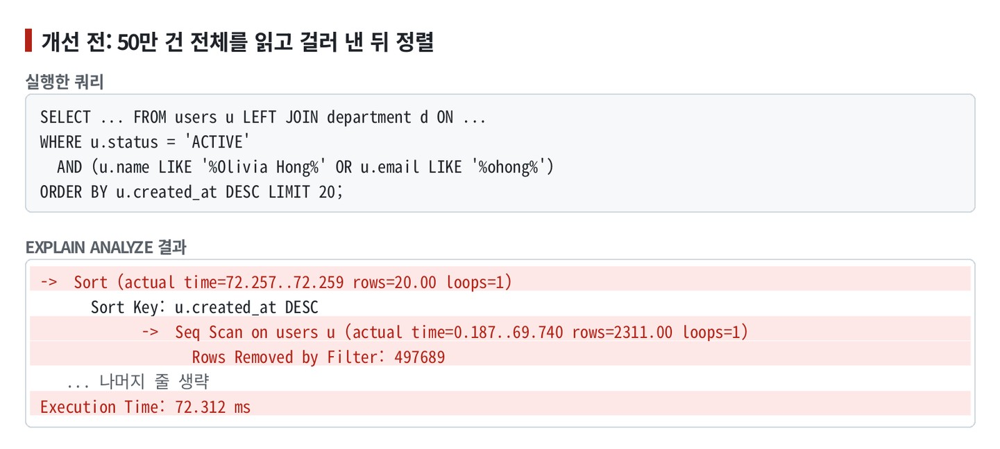
해결 과정
- pg_trgm GIN 인덱스로 앞뒤에 %가 붙는 검색도 인덱스를 쓰게 함
- OR 조건은 컬럼마다 나눈 쿼리를 UNION으로 합쳐 조건마다 자기 인덱스를 쓰게 함
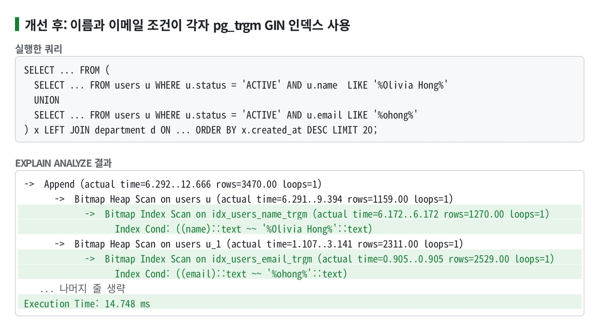
결과
| 항목 | 이전 | 이후 |
|---|---|---|
| 쿼리 평균 실행 시간 | 987ms | 20ms |
| 검색 API p99 | 1초 이상 | 200ms 이내 |
| 실행 계획 | 테이블 전체 읽기 | 조건마다 인덱스 사용 |
실행 계획 그림은 같은 조건을 다시 재현한 것이고 표의 수치는 당시 부하 시험에서 측정한 값
고객사별 Schema로 데이터를 격리하고 실패하면 자동으로 되돌리는 고객사 온보딩실패해도 자동 복구만든 리소스와 Schema 역순 삭제
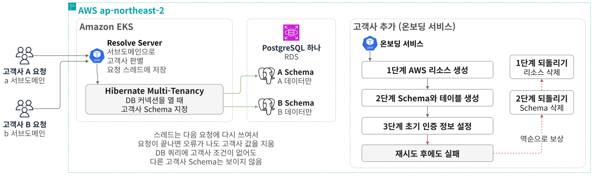
찾은 문제
- 여러 고객사가 한 서비스를 함께 써도 고객사끼리 데이터가 섞이지 않아야 함
- 고객사가 늘어도 DB 비용이 고객사 수만큼 늘지 않아야 함
| 방식 | 장점 | 감수할 점 |
|---|---|---|
| 모든 테이블에 고객사 id 컬럼 | DB 하나로 가장 저렴 | 쿼리에 고객사 조건이 하나라도 빠지면 다른 고객사 데이터 노출 |
| 고객사별 DB | 격리가 가장 확실 | 고객사 수만큼 DB 비용과 운영 부담 증가 |
| 고객사별 DB Schema (선택) | DB 하나 안에서 커넥션 단계에서 격리 | 고객사를 추가할 때마다 Schema 생성, 테이블 변경은 모든 Schema에 적용 |
해결 과정
- 요청마다 고객사 격리
- Resolve Server가 서브도메인으로 고객사를 찾아 요청 스레드에 저장
- Hibernate Multi-Tenancy가 커넥션을 열 때 이 값을 읽어 그 고객사 Schema에 연결
- 스레드가 재사용돼도 앞 고객사 Schema로 연결되지 않게 요청이 끝나면 이전 고객사 값을 삭제
- 고객사 추가와 실패 시 되돌리기
- 온보딩 서비스가 Route 53 서브도메인, ACM 인증서, IAM, DB Schema를 순서대로 생성
- 실패한 단계는 재시도하고 그래도 실패하면 보상 트랜잭션으로 끝난 단계를 역순 삭제
설계만 한 부분: 고객사마다 Namespace를 만들고 같은 서비스를 띄워 서브도메인별로 각 Namespace로 라우팅하는 구조로 부하와 메모리까지 격리하도록 설계. Kubernetes 단계는 설계까지 마치고 AWS 리소스 자동화를 먼저 구현
결과
- DB 커넥션 단계에서 Schema로 나뉘어 개발자가 쿼리에 고객사 조건을 빠뜨려도 데이터 노출로 이어지지 않음
- 고객사 추가가 중간에 실패해도 만든 리소스와 Schema가 자동으로 지워져 수작업 없이 추가 전 상태로 복구
인프라
VM 수동 배포를 EKS로 옮겨 배포 이력과 롤백을 Git으로 관리하는 GitOps 파이프라인롤백은 Git Revert 한 번배포 이력을 Git으로 추적
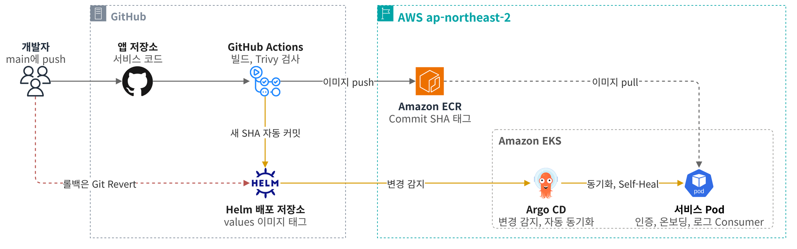
찾은 문제
- 개발자마다 자기 PC의 코드로 Shell 스크립트를 돌려 dev VM에 직접 배포해 배포되는 코드가 PC마다 달라짐
- 여러 명이 배포하면 서로의 배포를 덮어써 서버에 올라간 버전을 알 수 없음
해결 과정
- main에 push하면 GitHub Actions가 이미지를 빌드하고 Trivy 취약점 검사에 실패하면 배포를 중단. 통과한 이미지는 Commit SHA 태그로 ECR에 저장
- 앱과 분리한 Helm 배포 저장소에 공통 Template 하나를 두고 서비스별 차이는 values 파일에만 두어 배포 구성 표준화
- 인증, 온보딩, 로그 Consumer를 서비스별 values로 나눠 독립적으로 배포
- CI가 values의 이미지 태그를 새 Commit SHA로 자동 커밋해 배포 이력을 Git 커밋으로 관리
- Argo CD가 5분 주기로 배포 저장소의 변경을 감지해 Auto Sync로 반영
- Self-Heal을 켜 두어 클러스터를 직접 고쳐도 Git 상태로 복구
- 롤백은 배포 저장소 커밋의 Git Revert만으로 Argo CD가 이전 이미지 태그로 복구
결과
- 배포 경로가 하나로 모여 서로의 배포를 덮어쓰지 않음
- 배포된 버전은 Git 이력과 이미지 태그로 바로 확인
- 롤백은 Git Revert 한 번이고 배포와 롤백 절차를 문서로 남겨 다른 개발자도 혼자 처리
서비스 하나가 탈취돼도 피해가 번지지 않게 한 서비스별 AWS 권한 분리피해 범위를 서비스 하나로다른 서비스 비밀 값은 AccessDenied
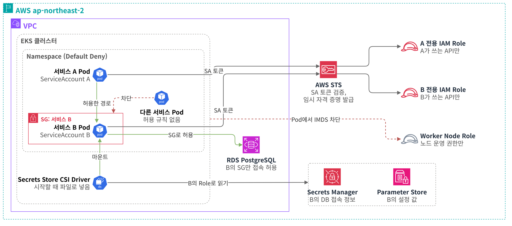
찾은 문제
- EKS 전환 직후 모든 Pod가 Worker Node의 IAM Role을 공유해 한 서비스가 탈취되면 다른 서비스의 권한과 비밀 값까지 쓰일 수 있음
- Pod 사이 통신이 Kubernetes 기본값대로 모두 열려 있음
- RDS 접속 허용 규칙이 CIDR 기준이라 같은 대역의 어떤 리소스든 DB에 접근 가능
해결 과정
- IRSA로 서비스마다 실제 쓰는 AWS API만 허용한 Role 사용
- Worker Node Role에는 노드 운영 권한만 남기고 Pod의 IMDS 접근 차단
- VPC CNI NetworkPolicy로 Pod의 들어오고 나가는 통신을 Default Deny로 막고 필요한 경로만 허용
- Security Groups for Pods로 서비스마다 Security Group을 붙이고 RDS는 그 그룹만 접속 허용
- DB 접속 정보와 설정 값은 Secrets Manager와 Parameter Store에 두고 Secrets Store CSI Driver로 주입하고 읽기 권한은 서비스별 Role로 제한
결과
- 한 서비스가 탈취돼도 다른 서비스의 AWS 권한과 비밀 값으로 피해가 번지지 않음
- 다른 서비스의 비밀 값 조회는 AccessDenied로 막히고 IMDS 호출과 허용하지 않은 Pod 요청도 차단되는 것을 직접 확인
- 허용하지 않은 Pod의 요청은 다른 서비스와 DB에 닿지 않아 탈취된 Pod 하나로 피해 범위가 한정됨
기동이 느린 앱의 Pod 재시작 반복을 멈춘 Probe와 리소스 기준Pod 재시작 반복 해소준비된 Pod만 트래픽 수신
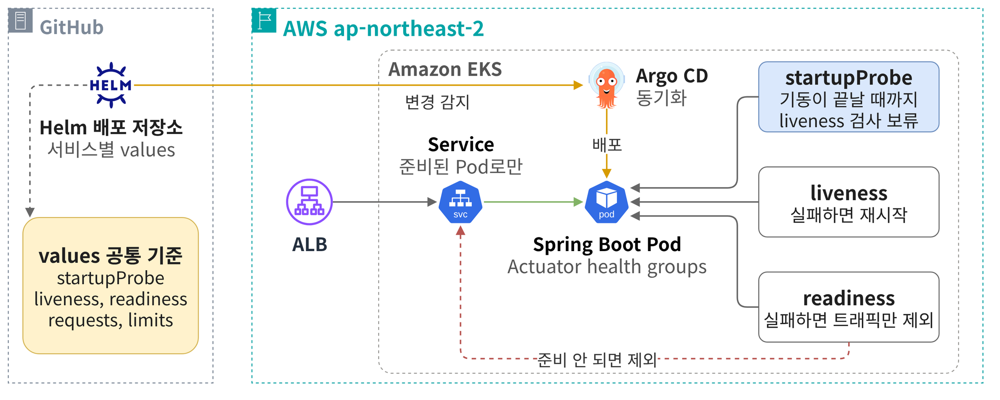
찾은 문제
- 대시보드에서 주말 동안 Pod가 수백 번 재시작한 것을 발견
- 로그를 보니 1분가량 걸리는 기동 중에 liveness Probe가 검사해 정상 Pod를 종료하고 다시 띄우고 있었음
- 기동 중 CPU 사용량을 보니 1 core로 낮게 잡은 limit에 막혀 기동이 더 느려지고 Probe 실패가 잦아지는 구조
해결 과정
- Spring Boot 기동 로그로 평상시와 가장 느린 경우의 기동 시간을 측정
- startupProbe의 failureThreshold × periodSeconds를 가장 느린 기동의 약 2배로 설정
- liveness는 startupProbe가 끝난 뒤 짧은 간격으로 검사해 실제로 멈춘 Pod만 빠르게 재시작
- Actuator health groups로 liveness와 readiness를 나누고 외부 의존성은 제외
- CPU limit을 1 core에서 2 core로 올려 기동 중 CPU throttling 해소
- requests는 평상시 사용량대로 두어 노드 예약 자원은 늘리지 않고 메모리 limit은 JVM 힙보다 여유 있게 조정
- 적용 뒤 RESTARTS와 대시보드로 재시작이 더 늘지 않는지 확인
결과
- 수백 번 반복되던 재시작이 멈추고 기동에 1분가량 걸리는 앱도 준비가 끝난 뒤에만 트래픽 수신
- 새 서비스도 같은 Probe와 리소스 기준으로 배포해 같은 문제가 다시 생기지 않음